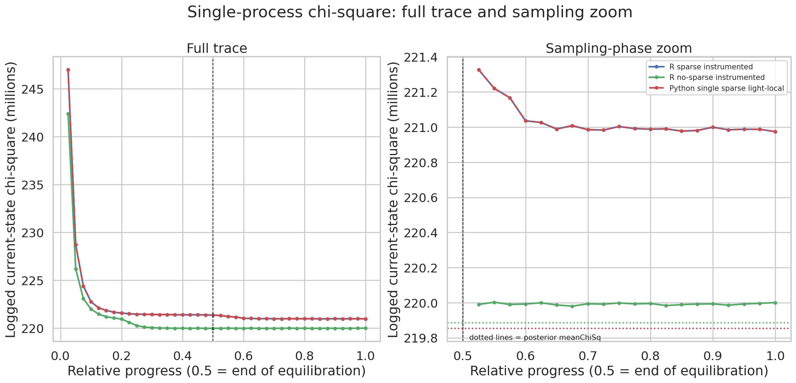
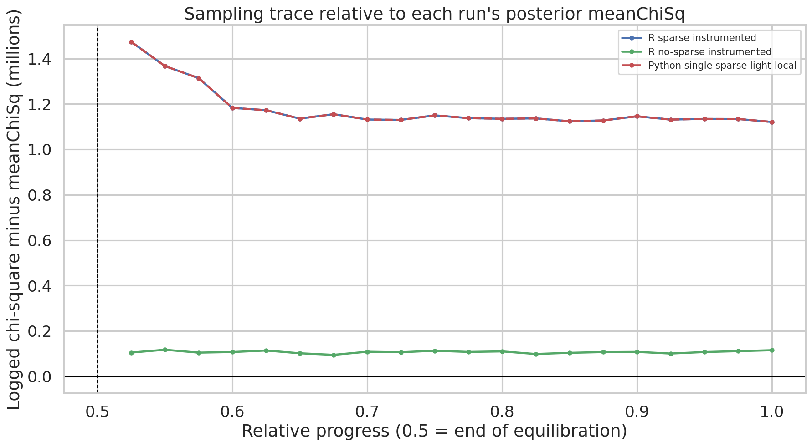
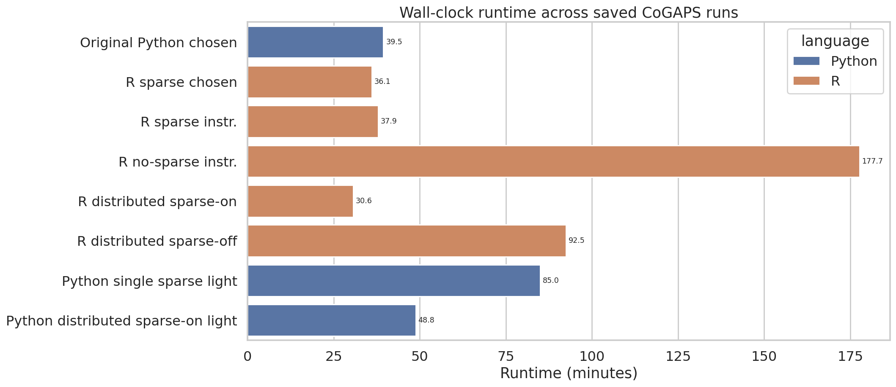
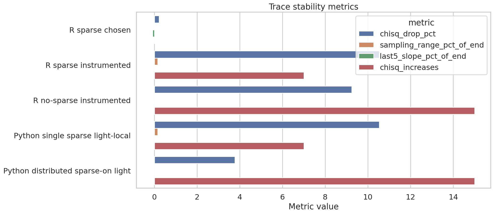
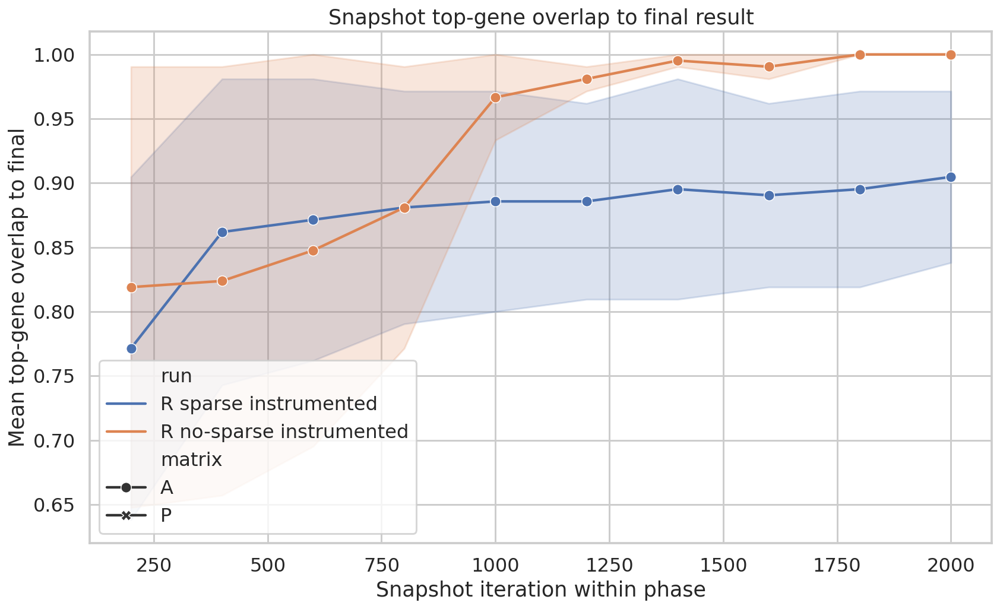
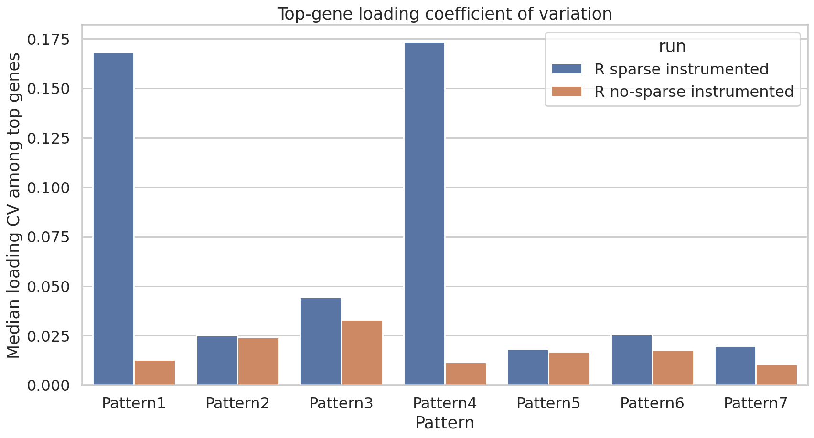
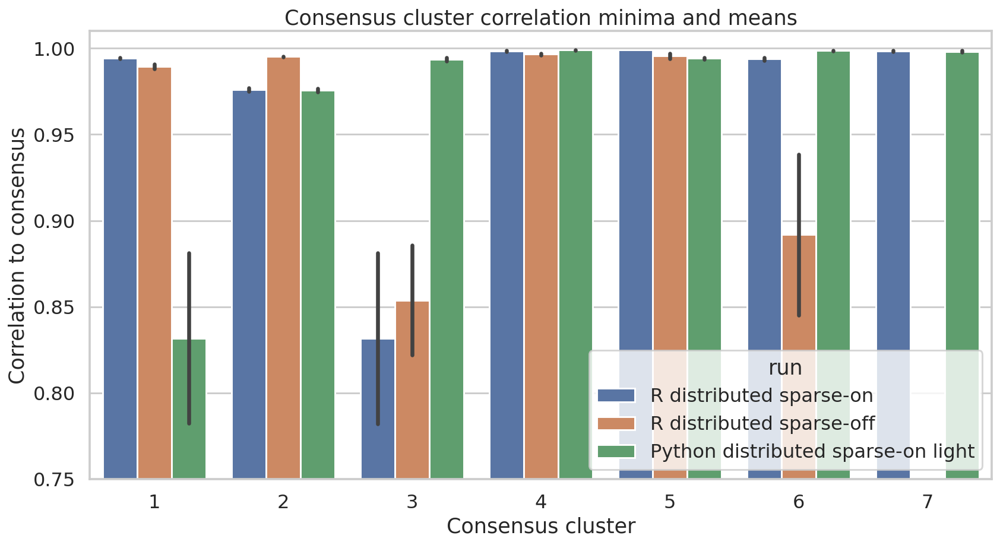
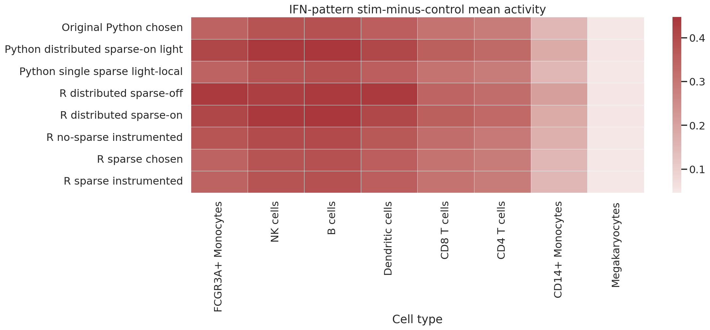

CoGAPS Diagnostics: Interpreted Report
Bottom Line
The sparse single-process model is the best diagnostic anchor. R distributed sparse-on is the best acceleration candidate. R no-sparse is not meaningfully a better fit, and current local Python is biologically reproducible but not performance-competitive.
Decision Summary
- Best diagnostic anchor for final narrative? R sparse instrumented. Full 40-point trace, snapshots, pump/posterior uncertainty, stable IFN program, and fast runtime relative to no-sparse.
- Does no-sparse improve fit enough to justify runtime? No. Posterior meanChiSq is slightly worse than sparse by 0.0144%, while runtime is 4.69x longer.
- Does Python reproduce the sparse biology? Yes. Python single sparse light-local has the same trace, IFN pattern, IFN correlation, top genes, total updates, and meanChiSq as R sparse.
- Does current local Python reproduce original 39 minute performance? No. The light-local rerun took 2.15x longer than the original saved Python run, even with pump/checkpoints/snapshots off.
- Best acceleration candidate? R distributed sparse-on. Fastest completed full run, preserves the IFN program, but has weaker consensus for at least one secondary cluster.
Important Result-Specific Interpretations
- No-sparse has a lower-looking logged current-state trace, but posterior
meanChiSqis slightly worse than sparse by 0.0144%. - No-sparse took 4.69x longer than R sparse instrumented.
- Python single sparse light-local reproduces R sparse trace, IFN pattern, IFN correlation, top genes, total updates, and meanChiSq, but is slow in the current local Docker environment.
- Distributed sparse-on preserves the dominant IFN program, but consensus diagnostics flag one weaker secondary cluster.
- The IFN program is biologically stable across implementations: canonical IFN genes and positive stim-control activity deltas are preserved.
Updated Figures
Interpretive Chi-Square Trace
Use this instead of the earlier single-axis plot. It separates the full burn-in behavior from the sampling-phase zoom and adds posterior meanChiSq reference lines.

Sampling Trace Minus Posterior meanChiSq
This shows why the green no-sparse trace looking lower is not the same as having a better posterior-summary fit.

Runtime Summary
Performance is part of model suitability here because no-sparse and local Python sparse impose large costs without improving the biological answer.

Trace Stability Metrics
Use these as secondary checks: plateau behavior, sampling range, and late slope matter more than tiny differences in logged current-state chi-square.

Snapshot Top-Gene Stability
For the instrumented R runs, this evaluates whether top genes stabilize during sampling.

Top-Gene Loading CV
Lower coefficient of variation means the leading genes for a pattern are more stable across posterior samples.

Consensus Cluster Correlations
For distributed runs, this is the key stability diagnostic. Weak consensus clusters point to secondary-pattern instability.

IFN Activity Delta
This is the most direct biological suitability check: the IFN pattern should increase in stimulated cells across expected cell types.
